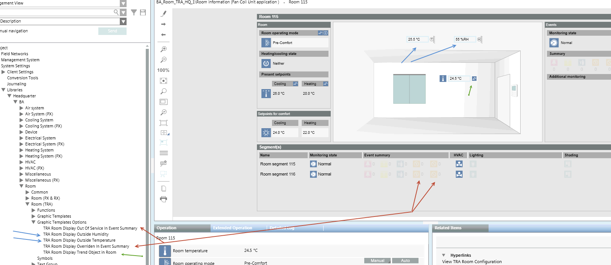

Edit Graphic for Room Template
Scenario: You have integrated your room units. Five graphic templates (project and room templates) are displayed on the graphic page; you can modify the display options as needed.
- Replacement values can be displayed on the graphics page if your project has no central weather station function and data on outside temperature and air humidity is unavailable.
- Select the option if a trend object is enabled on your device (option applies to preloaded devices) and you want to display the trend element on the graphics page with symbols.
- Select this option to display the number of objects that are out of order or overridden on the graphics page.

- System Manager is in Engineering mode.
- In System Browser, Logical View is selected.
- Select Project > System Settings > Libraries > L1-Headquarters > BA > Room > Room (TRA) > Graphic template options.
- The Object Configurator tab displays.
- Select the one of the following options:
- TRA room display out of order in alarm overview
- TRA room display of outside air humidity
- TRA room display of outside temperature
- TRA room display overrides alarm overview
- TRA room display of trend object in room
- In the Operation tab, select the Value property.
a. In the drop-down list, select Yes to use the template option in question.
b. Click Change. - Repeat the Steps 2 and 3 for all template options.